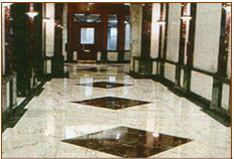
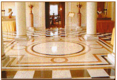
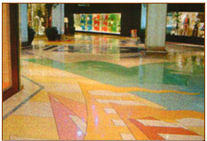
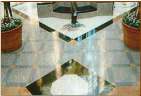
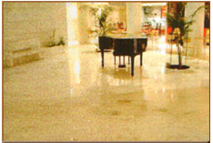
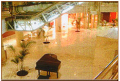

Restauro
Na Metalstone Portugal somos especialistas de restauro e manutenção de superfícies de pedra, devolvendo-lhe o aspecto original e mantendo esse aspecto, a longo prazo, através de uma manutenção adequada. Trabalhamos todo o tipo de pedra tais como Granito, Mármore e todos os seus subtipos e derivados, nos seus diversos tipos de acabamentos. Trabalhamos igualmente pavimentos artificiais tais como: Aglomerados, conglomerados, Terrazzo, Porcelanato e outros tipos de cerâmicos.

Manutenção
Manutenção, após o restauro, é um elemento crucial para manter a aparência de um alto nível. Com
os nossos programas de manutenção garantimos que não necessita de recorrer novamente ao restau-ro para manter a aparência inicial de alto nível.
Trabalhamos consigo para adequar o plano de manutenção ao seu budget e considerações logísticas.
 
As nossas equipas de manutenção realizam regularmente a medição do brilho do pavimento - "Gloss Check" - através de instrumentos especializados, de modo a mantê-lo entre os 80 e 100, numa escala de 100. É também medido o nível de aderência do pavimento, de forma a mantê-lo dentro dos valores de segurança do nosso país.
O programa de manutenção é estudado minuciosamente para cada cliente, tendo em conta o tipo de pavimento, o nível de tráfego e os procedimentos de limpeza. Com base nesta análise é calculada a frequência das intervenções de manutenção que cada cliente deverá ter, de forma a manter o pavimento dentro dos parâmetros de qualidade que o cliente espera e merece. As frequências vão desde intervenções diárias a mensais.
 
Serviços e Limpeza
Em Fevereiro de 2002 a Metalstone Portugal criou a divisão de serviços de limpeza. Não sendo o core business da empresa, a Metalstone Portugal decidiu no entanto prestar este tipo de serviço por três razões fundamentais: actividade complementar dos serviços por nós já efectuados, progressão do mercado no sentido de empresas que oferecem
serviços integrados e finalmente a vasta experiência dos elementos operacionais e gestores da Metalstone, tanto em Portugal como nos Estados Unidos,
na área de prestação de serviços integrados em empresas líderes mundiais.
A Metalstone Portugal é empresa prestadora de serviços de limpeza no Atrium Saldanha desde
Maio de 2002, sendo igualmente responsáveis pelo restauro do pavimento e fachada do edifício desde Março de 2001.
 
|